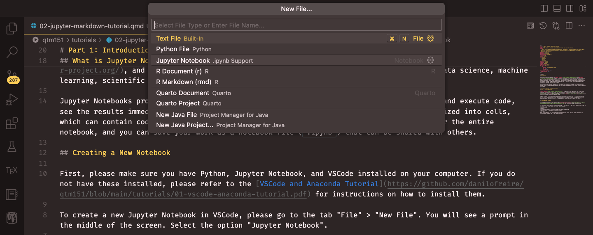
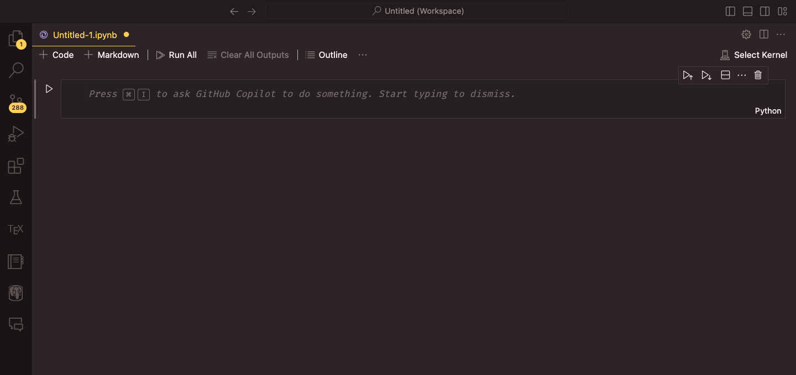
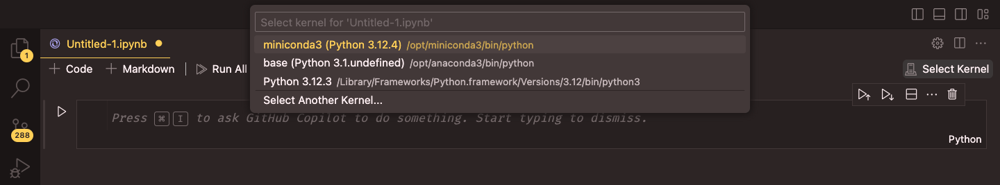
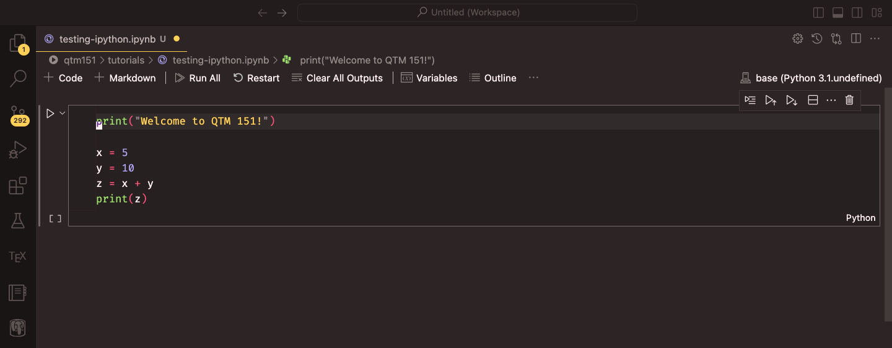
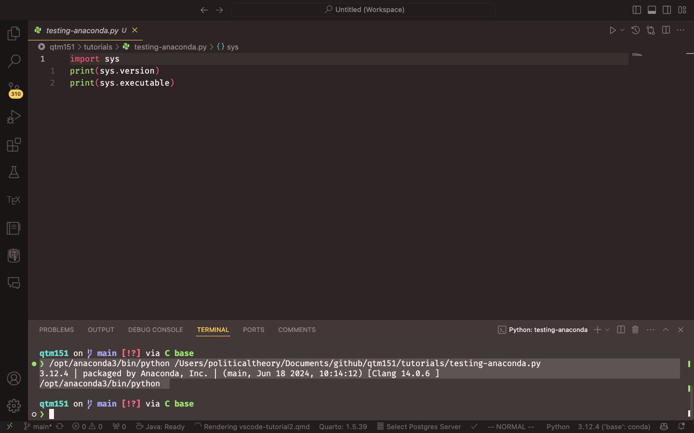
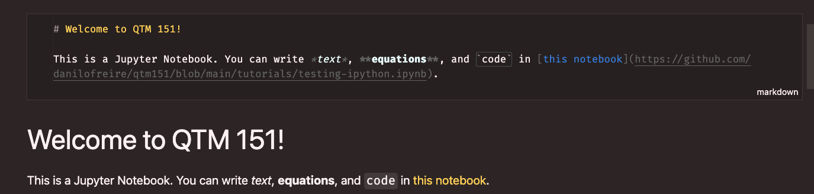
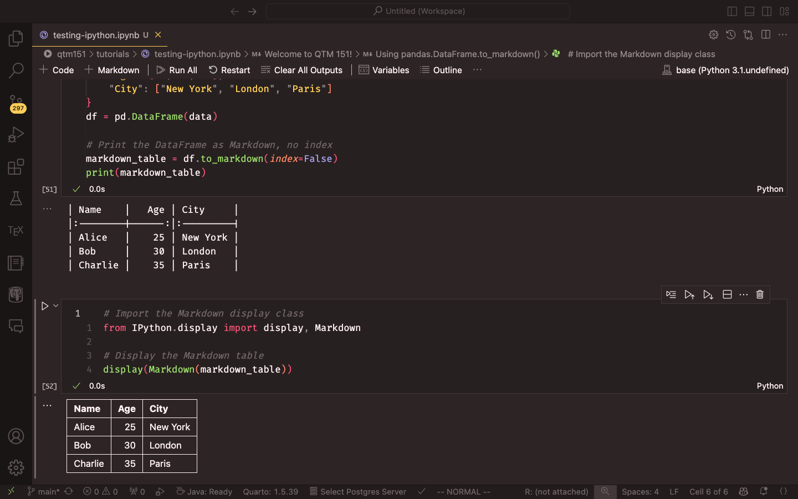
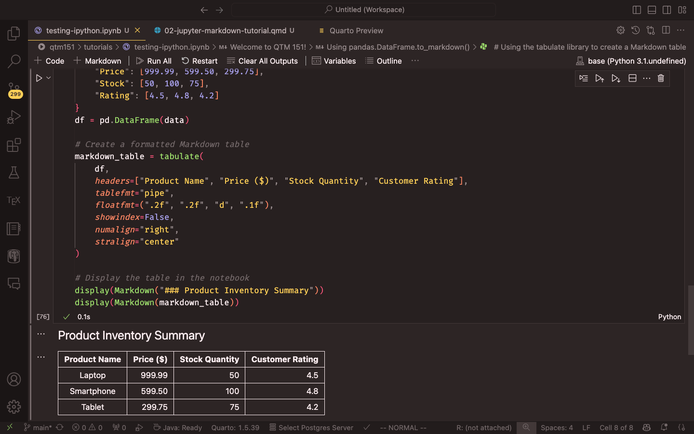

print("Welcome to DATASCI 350!")
x = 5
y = 10
z = x + y
print(z)DATASCI 350 - Jupyter Notebook and Markdown Tutorial
Introduction
This tutorial covers Jupyter Notebook and Markdown.
A Jupyter Notebook is a document that holds live code, its output, and your explanation of both, in one file. Markdown is the language you write the explanation in. It is a small set of plain-text conventions for formatting: asterisks for italics, hashes for headings, brackets for links. WhatsApp and Facebook Messenger use it too, so if you have ever made a word bold in a chat message, you have already written Markdown.
The tutorial has two parts. The first creates a notebook, runs a code cell, and writes a text cell. The second covers Markdown itself, from headings to equations.
Jupyter Notebook
What a notebook is
A Jupyter Notebook is an open-source web application for documents that mix live code, equations, figures, and narrative text. It supports over 40 languages, including Python, R, and Julia, and it is standard equipment in data science.
A notebook is a sequence of cells. Each cell holds either code or text. You run a cell and see its result immediately, below the cell that produced it. The whole thing saves as one .ipynb file that you can share, and the reader gets your code, your results, and your reasoning together.
Creating a notebook
You need Python, Jupyter, and VS Code installed first. Tutorial 01 covers all three.
In VS Code, click “File” > “New File”. A prompt appears in the middle of the screen. Select “Jupyter Notebook”.

VS Code creates a notebook with the extension .ipynb. Click the notebook name at the top of the screen to rename it. An empty notebook looks like this:

Now select the Python interpreter. Click the Python version in the top right corner. Select Anaconda’s “base” from the list that appears. Nothing will run until you do this.

Code cells
Click “+ Code”. An empty grey box appears with “Python” in its lower-right corner.

Type your Python in the box. For example:
Run the cell with the “Run” button on its left, or by pressing “Shift + Enter”. The output appears directly below:

Text cells
Click “+ Markdown”. An empty white box appears. Type your text in Markdown:
# Welcome to DATASCI 350!
This is a Jupyter Notebook. You can write *text*, **equations**, and `code`
in [this notebook](https://github.com/danilofreire/datasci350/blob/main/tutorials/testing-ipython.ipynb).Run the cell the same way, with the “Run” button or “Shift + Enter”. The Markdown renders as formatted text:

To edit the text again, double-click it. The grey box reappears.
Markdown
Markdown is worth learning because it is simple and because it is everywhere: Jupyter, GitHub, Slack, Quarto, and the documents you will write for this course all take it. The rest of this section is the syntax you need.
Headings
Use # for headings. One # gives a first-level heading, two give a second-level heading, and so on down to six.
# Heading 1
## Heading 2
### Heading 3Lists
Numbers make an ordered list, hyphens an unordered one. Indent a line to nest it under the one above.
1. This is an ordered list.
2. This is the second item in the ordered list.
- This is a sub-item in the unordered list.
- This is a sub-sub-item in the unordered list.- This is an ordered list.
- This is the second item in the ordered list.
- This is a sub-item in the unordered list.
- This is a sub-sub-item in the unordered list.
- This is a sub-item in the unordered list.
The same works without the numbers:
- This is an unordered list.
- This is the second item in the unordered list.
- This is a sub-item in the unordered list.- This is an unordered list.
- This is the second item in the unordered list.
- This is a sub-item in the unordered list.
Tables
Pipes separate the columns. The colons in the second row set the alignment: on the left for left-aligned, both sides for centred, on the right for right-aligned.
Table: Your Caption
| A | New | Table |
|:-------------|:----------------:|---------------:|
|left-aligned |centre-aligned |right-aligned |
|*italics* |~~strikethrough~~ |**boldface** || A | New | Table |
|---|---|---|
| left-aligned | centre-aligned | right-aligned |
| italics | boldface |
Turning a pandas DataFrame into a table
Typing a table by hand is fine for three rows. For a table that comes out of your analysis, let pandas write the Markdown for you with to_markdown().
You need the tabulate package, which to_markdown() uses internally. Anaconda ships pandas but not tabulate. Open a terminal in VS Code with “Terminal” > “New Terminal” and run:
conda install tabulateThen build a DataFrame and convert it:
import pandas as pd
from IPython.display import display, Markdown
data = {
"Name": ["Alice", "Bob", "Charlie"],
"Age": [25, 30, 35],
"City": ["New York", "London", "Paris"]
}
df = pd.DataFrame(data)
# index=False drops the row numbers, which you rarely want to show
markdown_table = df.to_markdown(index=False)
print(markdown_table)print() shows you the raw Markdown:
| Name | Age | City |
|:--------|-----:|:---------|
| Alice | 25 | New York |
| Bob | 30 | London |
| Charlie | 35 | Paris |To see it as a formatted table instead of raw text, pass it to display(Markdown(...)):
display(Markdown(markdown_table))
to_markdown() takes several arguments for tidying the result. The ones you are most likely to want are headers for column names your reader will understand, floatfmt for the number of decimal places, and colalign for alignment:
data = {
"Product": ["Laptop", "Smartphone", "Tablet"],
"Price": [999.99, 599.50, 299.75],
"Stock": [50, 100, 75],
"Rating": [4.5, 4.8, 4.2]
}
df = pd.DataFrame(data)
markdown_table = df.to_markdown(
index=False,
headers=["Product Name", "Price ($)", "Stock Quantity", "Customer Rating"],
floatfmt=(".2f", ".2f", "d", ".1f"),
colalign=("left", "right", "right", "right")
)
display(Markdown("### Product Inventory Summary"))
display(Markdown(markdown_table))
For a table with hundreds of rows, show a subset. A reader cannot take in more than about twenty rows on a page, and the full data belongs in a file. The tabulate documentation lists the remaining options if you need them.
Equations
Two dollar signs make a displayed equation. In Equation 1, for example, we have the standard deviation of a population:
$$
\sigma = \sqrt{\frac{\sum_{i=1}^{N} (x_i - \mu)^2}{N}}
$$ {#eq-stddev}\[ \sigma = \sqrt{\frac{\sum_{i=1}^{N} (x_i - \mu)^2}{N}} \tag{1}\]
One dollar sign keeps the equation inline: $\alpha = \beta + \gamma$ renders as \(\alpha = \beta + \gamma\). The Overleaf documentation lists the symbols.
Figures
An exclamation mark, the caption in brackets, and the path in parentheses:
{#fig-label}The label in braces is optional. Add it when you want to refer to the figure by number elsewhere in the text. Plots you generate in a notebook need none of this, as they appear under the cell that draws them.
Citations
Markdown handles references well through BibTeX files, but not inside Jupyter. The two packages that manage citations there, cite2c and Jupyterlab Citation Manager, are unmaintained and unfinished respectively. In a notebook, copy the citation from Google Scholar into a Markdown cell headed “References” at the end, and do the same for inline citations.
Footnotes
Footnotes work1. Write a caret and a label in brackets, [^label], where the marker should go. Define the content anywhere in the document with the same label followed by a colon2. Jupyter numbers and positions them for you. I usually put the definitions at the end of the paragraph that uses them.
Conclusion
You can now create a notebook, run code in it, and write formatted text around that code. That combination, code and explanation in one document, is what the rest of the course builds on. If anything here does not work on your machine, email me and we will sort it out.
Happy coding! :)